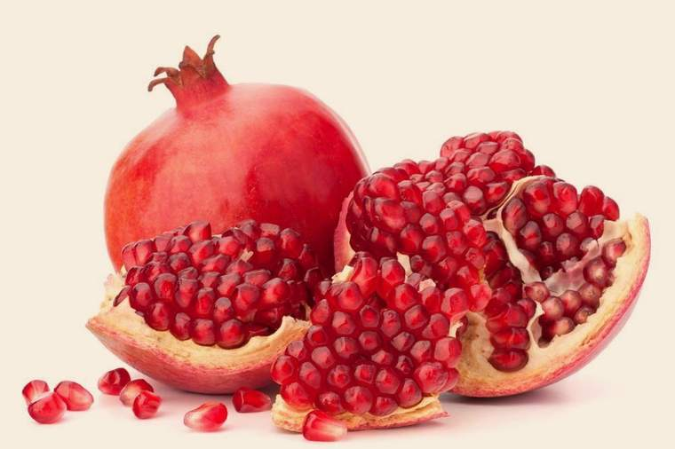
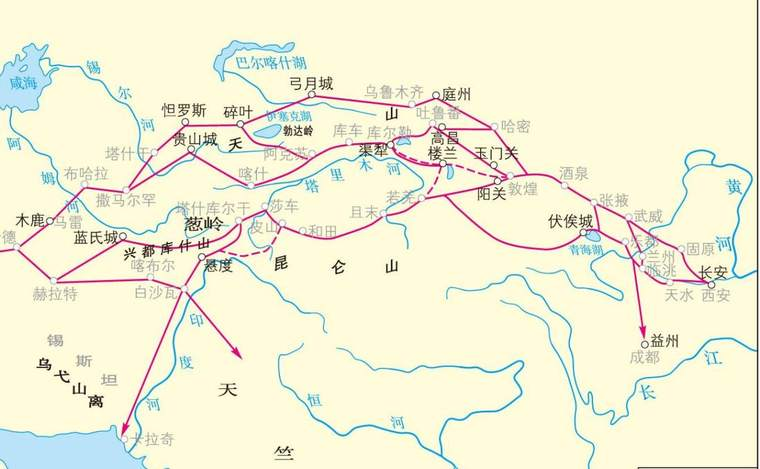
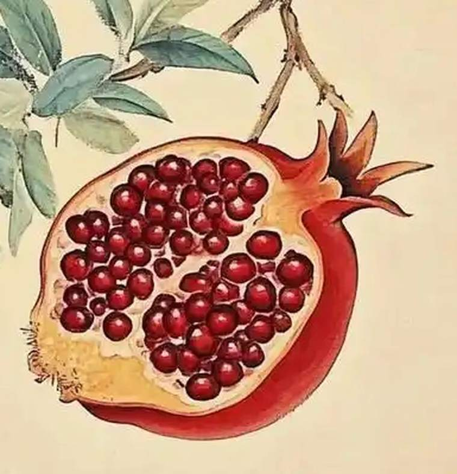
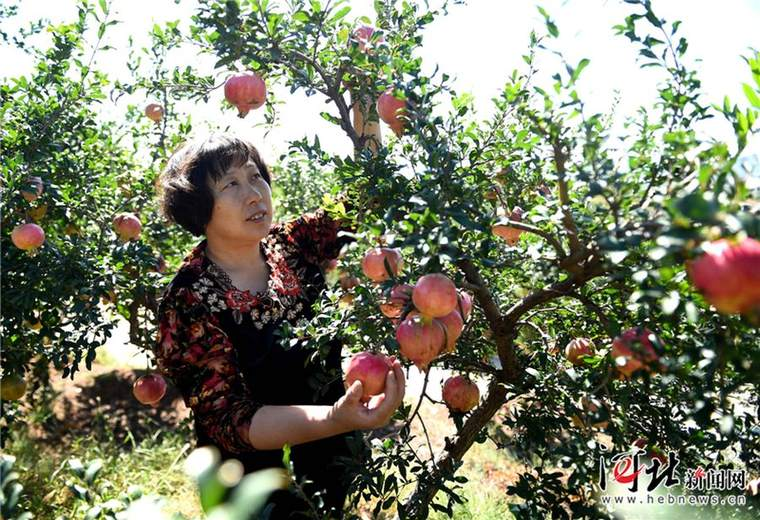
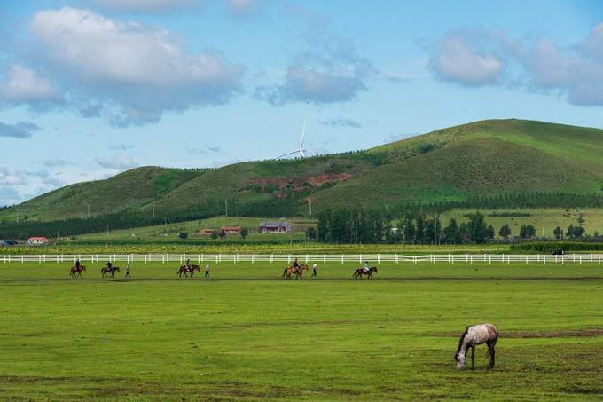

2026 河北省大学生人文知识竞赛 · 宣传创意文案
千子同一房
一颗石榴里的“共有精神家园”
上滑开始 · 约 2 分钟
千房同膜 · 千子如一
01 · 一颗外来的果树

公元前二世纪，
一株果树进了长安。
它叫“安石榴”。“安”是安息——汉人对帕提亚的称呼。一株外来的果树，后来成了中国婚礼上最吉利的话：榴开百子。
《西京杂记》记上林苑“安石榴十株”。
02 · 一条路
它被接纳，被祝福。

一个外来的名字，走了几百年，
长成中国人的一句祝福。
这大概就是“化”的意思。
03 · 剖开它
你会看到一张结构图

轻点，剖开它
一颗果实里，几百粒籽，同皮、同膜、同一份甜。
石榴皮包住所有的籽，石榴膜把籽分成小格。
每一粒都独立，又都血脉相连。
点一颗籽，看它说什么
04 · 这张图，画了两千多年
从“五方之民”
到“多元一体”
轻点一个朝代，看它那一段
《礼记·王制》说“中国戎夷，五方之民，皆有性也，不可推移”。那时已经承认差异，只是把差异固定在各安其位的位置上。
05 · 在河北
元氏石榴，红了太行

石家庄元氏县西部山区，石榴栽种已近两千年。当地“大叶满天红”等品种，粒大核软、汁多味甜，与柿子、核桃、红枣并称“元氏四宝”。
这么近，那么美，周末到河北

06 · 六个自治县
一张河北地图上的六个点
轻点地图上的红点，看看这个县

丰宁满族自治县
坝上草原与京北第一草原所在，满族人口聚居的山区县。
河北没有自治区，却是多民族散居的省份：55 个民族成分、6 个自治县，守着满、回、蒙古的村寨；承德外八庙的鎏金瓦下，清代曾把不同信仰的人请到同一座山前。今天，这份“聚”落在灶台与工位上。
07 · “共有”不是“相同”
共有的，是三样东西
共同的疆域与历史
一起开垦、一起守边、一起经历兴衰；
这片土地，是共同写的。
共同的语言与经典
《论语》《老子》《诗经》，不分民族；
谁读，都算自己的传统。
共同的节日与情感
过年、团圆、婚丧嫁娶里的那点人情，
是相通的。
共有，不是把籽压成一粒；
是承认不同之后，仍然选择在一起。
08 · 结语
各民族要像石榴籽一样
紧紧抱在一起。
—— 习近平
不必相同，才能同甜。
2014 年第二次中央新疆工作座谈会（原文亦作“像石榴籽那样紧紧抱在一起”）
附 · 引用与说明
本页资料与说明
回到开头，再看一遍